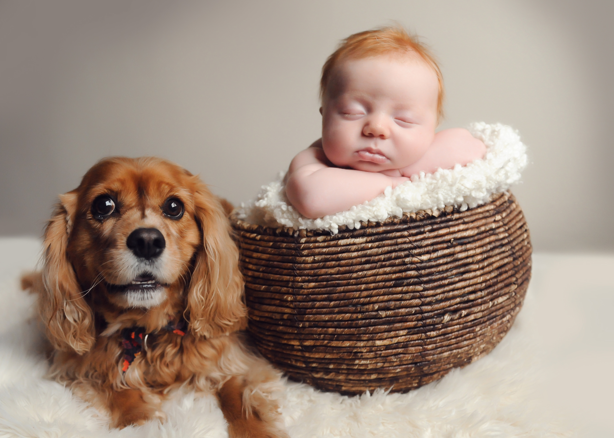
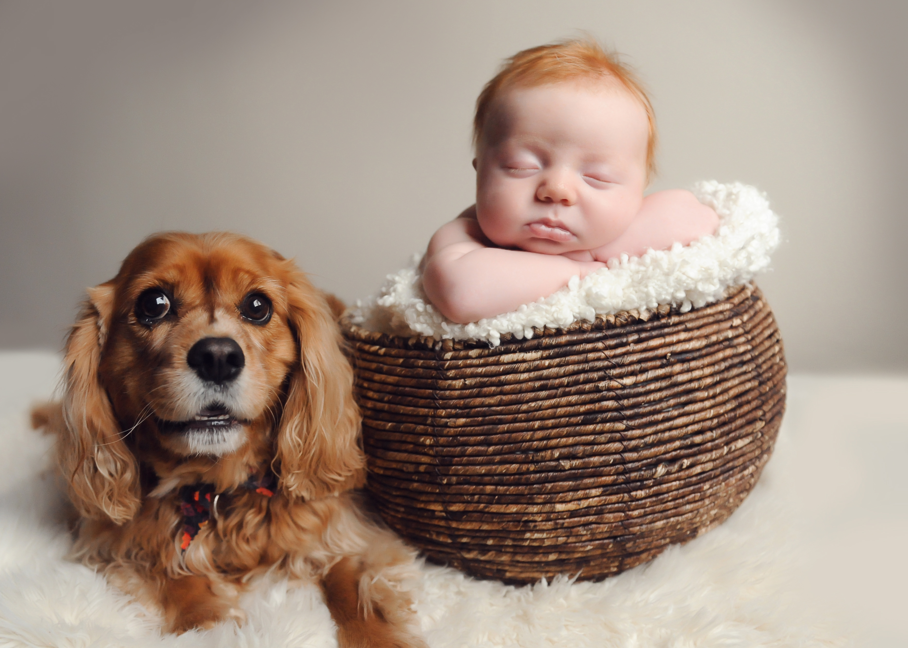
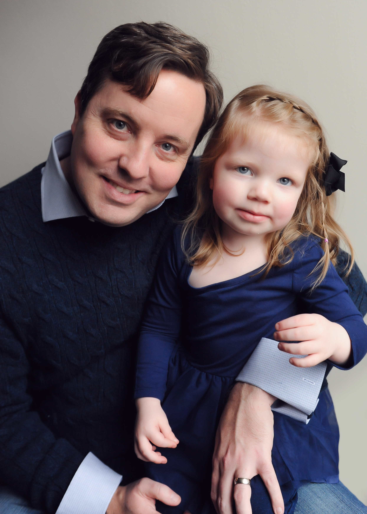
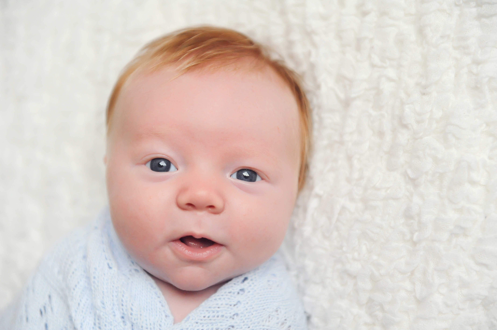
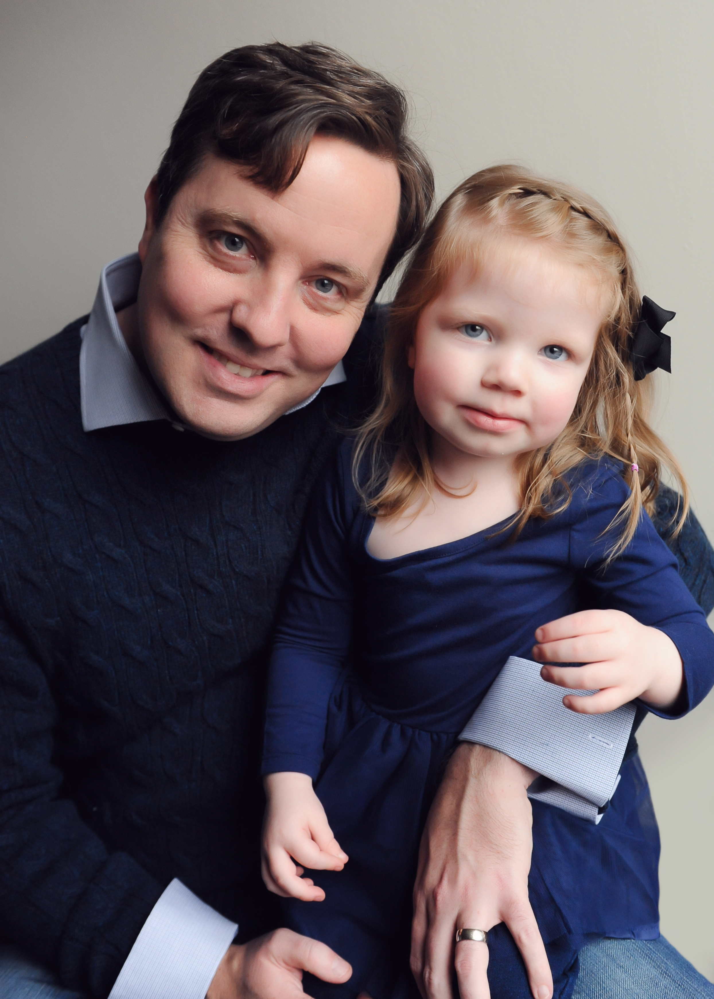
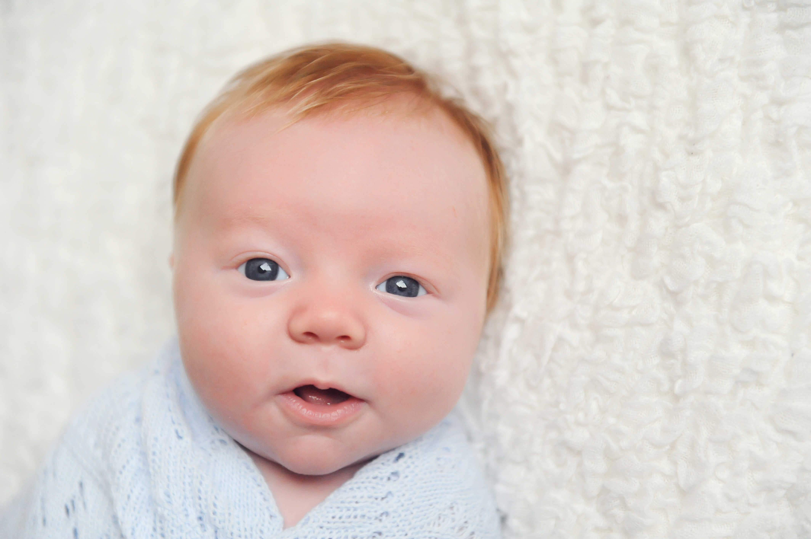

About my family...
We are the O'Connors...My wife Erin, daughter Kaitlyn (2), son Aidan (5 months), and our dog Parker. They are my everything, inspiration, and reason to exist. Before them, I was simply just a sole wandering this world. It was only until I was joinned with each one, did I begin to understand my purpose in this life. We live here in the city and enjoy spending time with one another.


 



 


